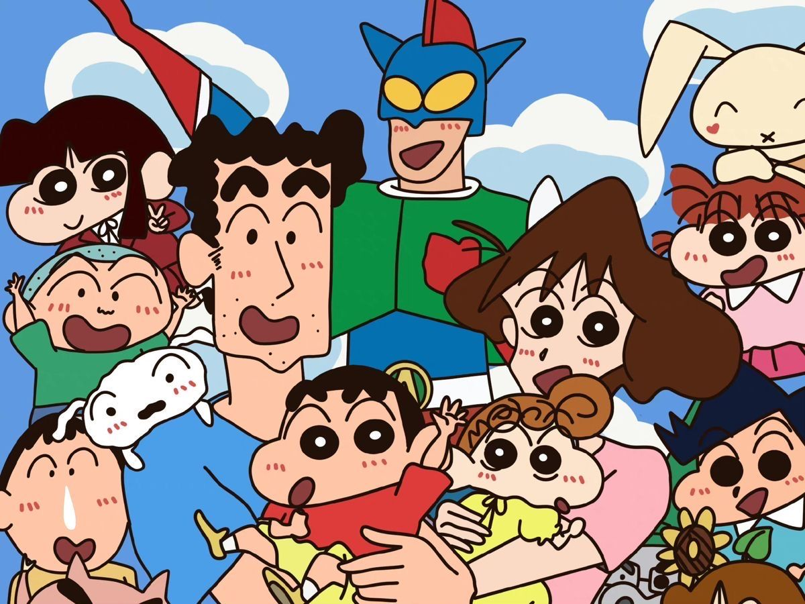
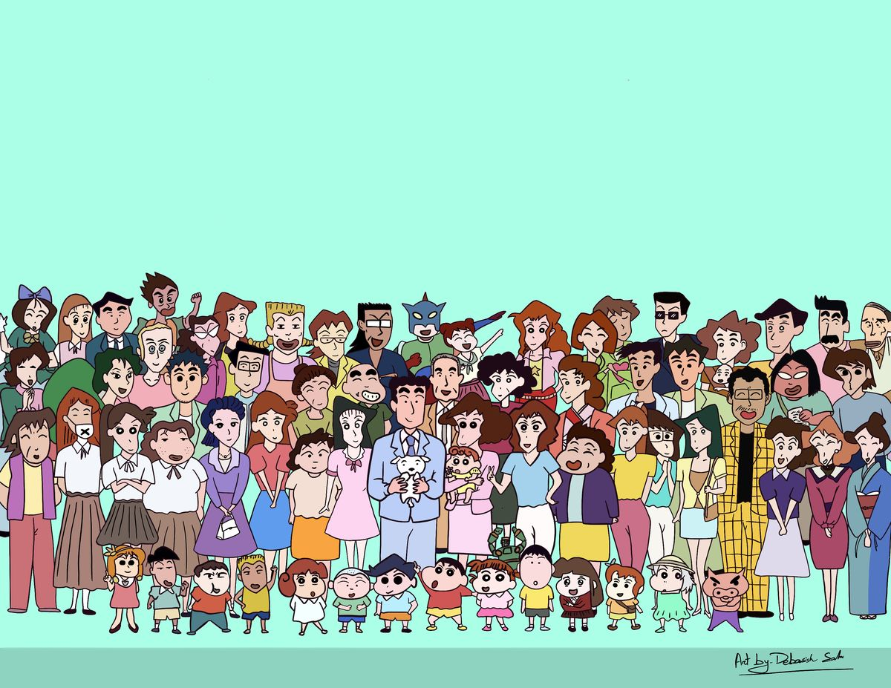

Crayon Shinchan
Crayon Shin-chan mengisahkan keseharian dan petualangan Shinnosuke Nohara bersama keluarga, teman-teman TK Futaba, Shiro, dan warga sekitar di Kasukabe. Ceritanya memadukan komedi kehidupan sehari-hari, momen peristiwa penting keluarga Nohara, hingga sesekali kisah fiksi seperti misteri atau perjalanan waktu.
Karakter Utama
Tokoh Utama
Shinnosuke Nohara
Orang Tua
Misae & Hiroshi Nohara
Karakter Lainnya
Keluarga dan Teman Shinchan
Himawari Nohara
Shiro
Ginnosuke Nohara
Tsuru Nohara
Semashi Nohara
Yoshiji Koyama
Hisae Koyama
Masae Koyama
Musae Koyama

Toru Kazama

Nene Sakurada